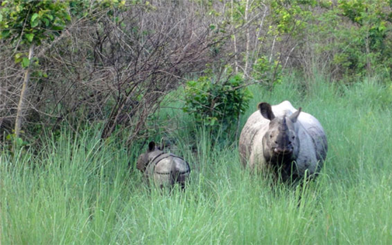
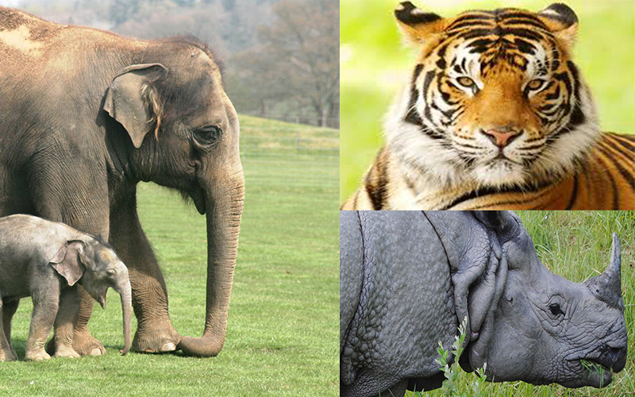

5 Reasons Why Nepal Is Winning The War Against Wildlife Crime
-
Political PushThe Nepalese government has made conservation a priority, strengthening legal protections for wildlife, imposing stiff penalties for crimes and forging strong partnerships with conservation organisations like the WWF. It’s also streamlined cooperation between its police force, army and park officials, a move that’s significantly boosted the effectiveness of enforcement and monitoring efforts across the country. Nepal’s iconic Chitwan National Park, once a poaching hotspot, had more than 1,000 soldiers patrolling within its boundaries in 2013, according to a BBC report. The country has also established a Wildlife Crime Control Bureau to root out networks of wildlife traffickers.
Making roomIt might be a small country (about the size of England and Wales combined), but Nepal has earmarked an impressive amount of space for nature. According to the WWF, it now boasts ten national parks, three wildlife reserves and six conservation areas that cover more than 13,000 square miles – that’s 23 percent of the country.
Embracing technologyThe country recognised the potential of new technologies in assisting the fight against poachers early on. In 2012, it deployed conservation drones to act like ‘eyes in the sky’ to help track down poachers in remote, hard-to-reach places. It has also turned to specialised tools and software (known as SMART) to boost the effectiveness of anti-poaching operations and to help direct foot patrols and other resources to areas where they are needed most. Camera traps, satellite radio collars and, most recently, Google Glass have been helping researchers track threatened species like rhinos.
Giving communities a stakeWhile the promise of easy money continues to lure locals from impoverished communities to poaching in many African nations, Nepal’s government has taken steps to foster stewardship by giving communities a stake in wildlife conservation. According to the WWF, an estimated 28 percent of the country’s forests are now managed by locals. Community Based Anti-Poaching Units (CBAPUs) are active all across the country – and they have good reason to be motivated. Crucially, communities that border Nepal’s wildlife reserves receive 50 cents of every tourism dollar earned, so protecting the animals that attract the tourists makes economic sense.
International teamworkNational borders are no deterrent for wildlife criminals, nor are they an impassable boundary for wild animals. Well aware of this, the Nepalese government maintains strong relationships with neighbouring nations in an effort to nurture ecosystems and fight transnational wildlife crime. The country has joined hands with India to secure the vital Boom-Brahmadev wildlife corridor and joined the South Asia Enforcement Network, an organisation that strives to promote regional co-operation for curbing illegal wildlife trade. In addition, one of the outcomes of this week’s anti-poaching meeting was an agreement to establish an intelligence-sharing network with other tiger-range nations to help fight traffickers.
Good News For Animals In Nepal: A Full Year Without Poaching
-

Bucking the worldwide trend, Nepal continues its successful fight against poaching. On World Wildlife Day, March 3, Nepal celebrated 365 days with zero poaching. No rhinos, tigers, or elephants were killed. It’s the second year of such success in Nepal. In 2011 the country also had none, and in 2012 it lost just one rhino to poaching.
This achievement is particularly notable in the face of increased poaching elsewhere. According to John Scanlon, secretary-general of the Convention on International Trade in Endangered Species of Wild Fauna and Flora(CITES), Nepal’s success is the result of “strong and committed leadership, excellent national collaboration among enforcement entities and with parks agencies, very effective engagement with local communities, and targeted intelligence-led enforcement actions leading to arrests of key players at the top of the criminal chain.” More than 700 criminals were arrested for wildlife-related crimes this past year, including many “kingpins.”
Poaching of endangered animals on rise
-
Friday, November 7th, 2014
To curb smuggling of the body parts of endangered animals, the Central Investigation Bureau (CIB) and other stakeholders have intensified surveillance in the forest area. In the last one month alone, police have arrested three groups involved in poaching of endangered animals.
Forty-year-old Lalu Tamang of Bhimeshwar was held by the police for hiding pangolin scales and other animal parts in his house. The seized parts have been handed over to the District Forest Office (DFO). Some three weeks ago, a team of Central Investigation Bureau (CIB), had arrested two locals in possession of body parts of red flying squirrel. A lab test had confirmed it. Earlier, the parts were thought to be of Red Panda.
These animal parts are smuggled to the capital and then to India and Tibet.
One of the widely smuggled animal parts is that of Red Panda. There are over 40 red pandas in the forests of Dolakha district, according to Gauri Shankar Conservation Area.
“To control the poaching, we have recently formed local conservation committees in the villages surrounding the conservation area. They are actively involved in conservation of endangered animals,” said Satya Narayan Sah, chief of Gauri Shankar Conservation Area. He said security has been beefed up in the area.
Endangered species found in Chitwan community forests
-

Click on the image of elephant, tiger or rhino to view full size image.January 14, 2013
CHITWAN, JAN 13: Amidst reports that many wild animal species are on the verge of extinction in Nepal, there´s a good news. Many endangered wild animals have been spotted in two community forests in western part of Chitwan.
As many as 181 animal species including many rare animals including one-horned rhino, Royal Bengal tiger and python have been found in the Setidevi Community Forest (SCF) and Gyaneshwar Community Forest (GCF). The forests are spread over 500 hectares of land.
Dipak Adhikari, the chairman of Setidevi forest informed that the presence of rare animals in the forests came into light after the community forests used ´camera trapping technology´ to find out the real condition of animals residing in the forest. “We had placed fifteen cameras in different parts of the forests,” he added.
Adhikari added that the sightings of endangered animals in the forests is very important as it paves the way for developing the community forests into a major hub for environment tourism.
As many as 26 one-horned rhino are currently residing in the community forests, informed Krishna Prasad Pudasaini, president of Gyaneshwar forest.
Officials of Prakriti ko Sathi, an organization which provided the community forests with the trapping technology for counting the animals, says different rare species of wild animals were sighted during the two month-long survey, the forests could attract hordes of tourists and this could help in uplifting the economic status of the locals living around the forests.
According to Raju Acharya, director of Prakriti ko Sathi, the study shows that 125 bird species including two endangered and 19 mammals including rhino, tiger, and deer among others have been spotted.
However, Dr Indra Prasad Sapkota, the chief of District Forests Office (DFO) in Chitwan said although the presence of wild animals like tigers and rhinos in the community forests is good, they might pose a threat to the locals. “We are ready to cooperate and assist for preserving wild animals and at the same time protecting the locals,” he said.